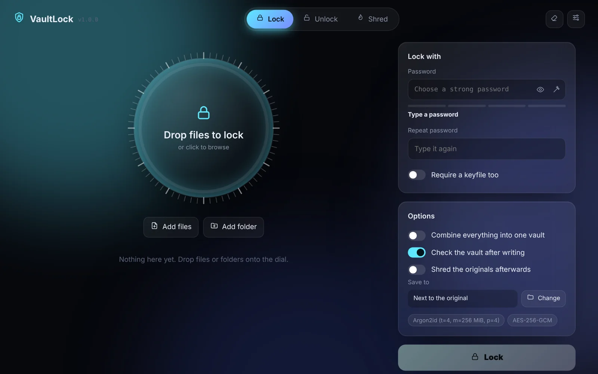
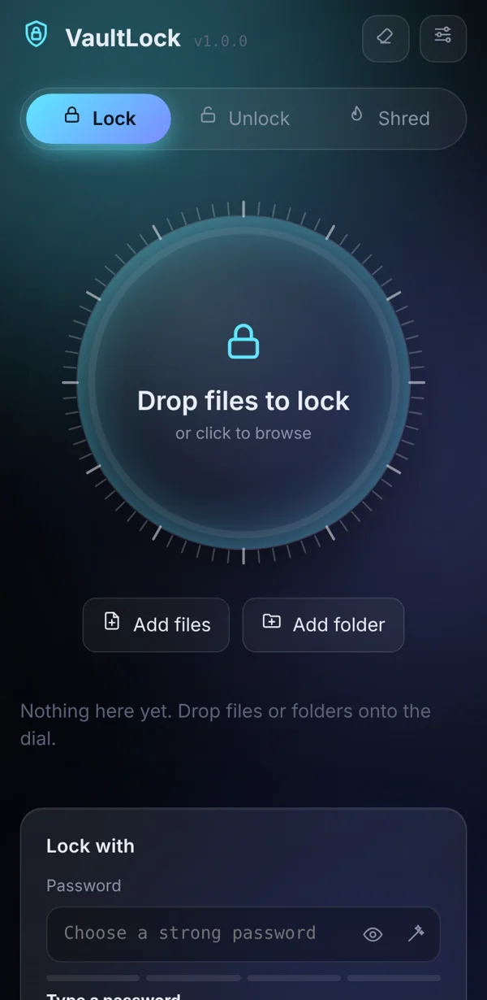

VaultLock turns files and folders into authenticated .vault containers using modern encryption, with no account, no cloud and no telemetry. Preview inside without writing anything to disk, then shred the originals once the vault is proven good.

Built for people who want real encryption without learning a command line, and for developers who want to read exactly how it works.
AES-256-GCM or ChaCha20-Poly1305. Wrong passwords and any tampering are caught before a byte of plaintext is released.
Add a random keyfile as a second factor. Guesses cannot even be tested without it.
A folder becomes one vault, streamed straight into the encryptor with no plaintext temp file.
Preview images, PDFs, audio, video and text decrypted in memory only. Nothing is written to disk.
1, 3 or 7 overwrite passes. It only runs after the new vault is re-read and every block authenticates.
Percent, MB/s and ETA on a single dial. Cancel any time and your originals stay untouched.
A pattern-aware estimate that spots dictionary words, leetspeak, keyboard walks and dates. Plus a passphrase generator.
The same engine for scripts: lock, unlock, verify, inspect, rekey, shred, keygen.
No CDN, no web fonts, no analytics. It runs on 127.0.0.1 and reaches nothing else.
Three steps in the app. Underneath, every vault follows the same careful pipeline.

The full byte-level container format is in docs/FORMAT.md in the repository.
script-src 'self'Anywhere a file should stay private if it is lost, copied or backed up somewhere you do not fully trust.
IDs, tax records, contracts, medical files and recovery codes.
Carry or send files knowing a lost drive reveals nothing.
Lock a folder before it goes to storage you do not control.
Protect coursework and client work on shared or lost laptops.
You need Python 3.11 or newer from python.org. On Windows, tick “Add python.exe to PATH” in the installer.
# 1. get the code git clone https://github.com/Moazamuddin12/VaultLock.git cd VaultLock # 2. start it .\start_vaultlock.bat # Windows (or just double-click it) sh start_vaultlock.sh # macOS / Linux
The launcher builds its own environment on the first run and opens VaultLock in your browser. Or install it as a command:
pip install "git+https://github.com/Moazamuddin12/VaultLock.git" vaultlock gui
Security tools should say what they cannot do. VaultLock has not had an independent audit.